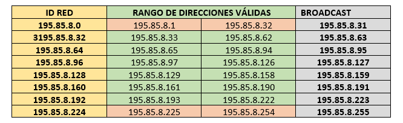
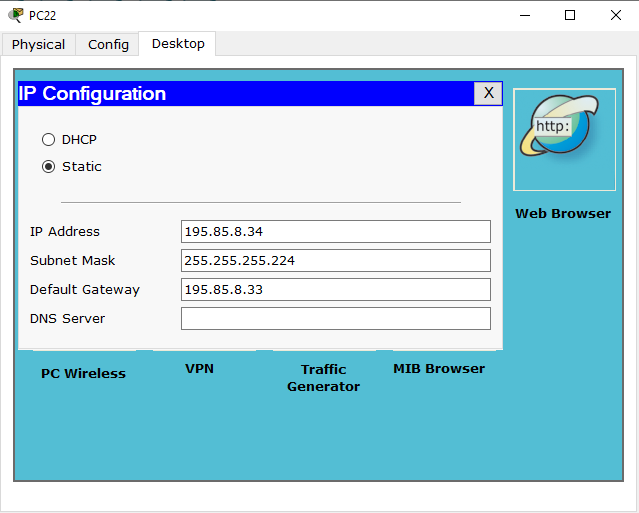
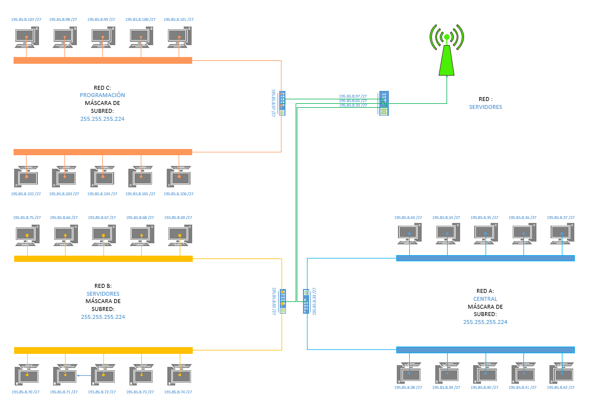

MATERIALES
- PACKET TRACER V5.2.1.0006
- VISIO PRO - STANDARD
- WORD
PASOS
- Cálculo de la máscara de subred personalizada

- Cálculo del rango de direcciones IP válidas,
tomando como referencia la siguiente dirección:195.85.8.0
- Rango de direcciones IP

- Asignación de las direcciones IP a cada uno de los ordenadores

- Configuración de los 3 puertos FastEthernet del router (Los pasos de la captura
se repite para cada uno de los puertos)

- Revisamos la configuración del router haciendo uso de los siguientes comandos

- Revisamos y agregamos el puerto serial al router para poder conectarlo a la nube (Para esto primero apagamos
el router y una vez agregado el puerto lo encedemos de nuevo)

- Una vez terminado el trabajo en Packet Tracer procedemos a realizar el diseño en VISIO

DESCARGAR ARCHIVOS
Documentación
Diseño en Visio
Red PKT